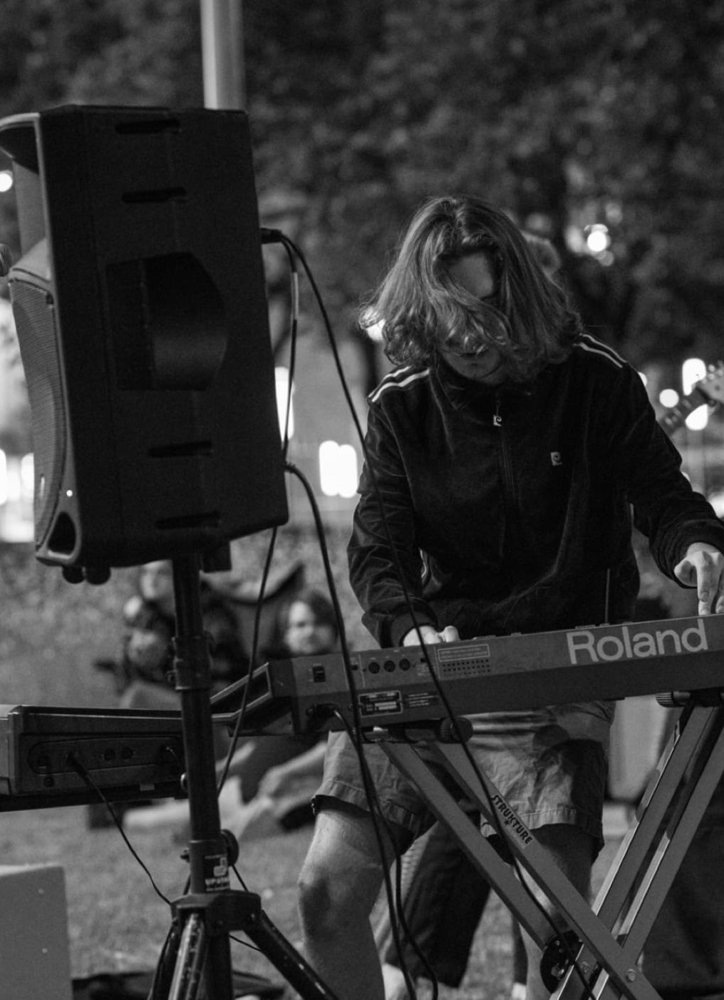

Timothy Nagle
Producer, Composer, Keyboard Player, A/V Artist
Tim Nagle is a Philadelphia based musician and video artist. Tim plays piano and synths for Philly rock band Mom Cheese ("City" EP out now), produces for local artists, and releases his own music on SoundCloud. Tim also creates analog video feedback art for live music, art installations, and music videos.

Check out my music:
Mom Cheese
SoundCloud
Fun beatmaking toy I made:
Drum Machine